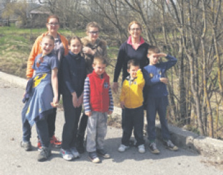
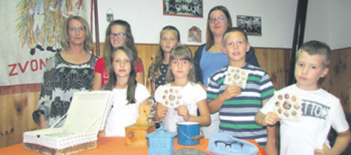
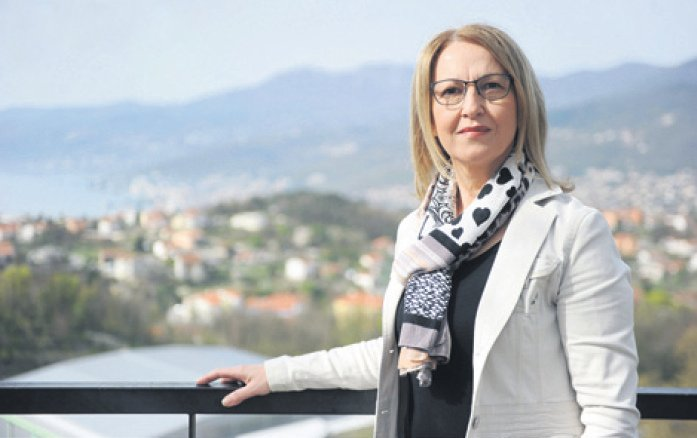

Žejane nisu od čera, one su preživele i Mletačku Republiku, i Habsburgovsku vlast, i talijansku okupaciju, i Drugi svjetski rat kada su bile popaljene do temelja... Pa su se kuće obnovile, selo se sponova zdignulo, očuval se je zajik i užanci. Nažalost, sada je se manje izvorneh govorniki
Jutro puno sunca zimamilo je pol Opatije na Lungomare. Gore se luštrelo nebo celeste, dole se more modrilo i nutilo puno radosti. A nas dve zibrale smo najveću poneštru va Ambasadore s ke smo gledale su tu opatijsku lepotu.
 I dokle su oče z galebi nadletale barki i more, besedi su bežale pod Šiju, va jeno mićo mićihno njazlo, nan oben jako drago. Ale njoj – Adrijane Gabriš – ka j' va njin rojena, odrasla i dvajset let mladosti proživela – ono je čuda draže. To mi govore luštre oče i vesel smeh Adrijanin ka se od Žejan još va ve k ni va duše odelila. I neće!
Tako je naš pogovor i počel i finil, kako da sedimo pod Šijun va Žejanah, a ne va Ambasadore.
Povedite nan prvo ka je I čigova Adrijana?
- Ja san rojena kako Adrijana Stambulić. Tata mi je bil Stanko le Grzele, a mama Branka lu Magåta. Imeli su samo mane i moju stareju sestru Rosanu. Obe smo odrasle va Žejanah. Potle nas je živjenje otpejalo saku va drugo mesto. Rosanu va Lovran s familijun, a ja san va Kastve s mojun familijun.
Kad san još bila otročica, va Žejanah je delala škola pa san četiri razredi storila doma, a drugi četiri pul Matuj. Srednju školu za inokorespondenta i Ekonomski fakultet finila san v Reke, tako da san diplomirani economist vanjske trgovine. Jeno vreme san delala v Opatije va Kvarner expresse, potle v Reke, a kad san se oženila za Zadrana i još h temu pomorca, pa kad nan se vaje za ten rodil Ivan onda i Luka, pustila san delo i nastala familiju dokle j' muž Dragan navigal. Bivamo pul Rešetari kade je tata od Riječke luke dobil stan i tako san postala napol vaša Kastafka...
Dobro ste rekla napol, aš ona prva polovica će zavavek ostat žejanska?
- Istina. Ne moren pozabit vreme kako san z otroka zirastala va divojku, ni zajik s ken me je nona zibala, ni delo s ken se moralo preživet, ni tanci i kanti keh san od starejeh navadila... Se je to tu nutreh va mane. Čuda let je to bilo stišnjeno i spravno, samo ča ja to dugo vremena nisan razumela. Čudila san se ča me to vavek va Žejani vuče I zaš mi srce tako jako pošne tuć kad se vozin po poznatoj ceste ka peja va moje djetinjstvo... Danas razumen da ću zavavek bit otročica Grzelina.
Za delon va grad
Tancala ste va folklore, govorite žejanski zajik, počela ste i mlajeh vadit zajiku za kega reču da brzo nestaje?
 - Ja, tancala san va folklore još va osnovnoj i srednjoj škole. Va to vreme si smo bili i va KUD-e "Danica" z Pasjaka. Neki su kantali, neki sopli, neki tancali, ali smo si bili više aktivni nego ča su mladi danas. Doma smo govorili žejanski aš su mi i mama i tata rojeni va Žejanah. I obe noni i oba nonića su mi bili Žejanci, tako da san ja dobro navadila naš žejanski govor. Kad san se oženila storila sangrešku kako i čuda našeh divojak imladić, da san va brake z mužon ki ne zna žejanski – za razumet se – počela govorit hrvaski i potle nastavila tako govorit z decun. Danaska mi je jako žal aš da san z Ivanon i Lukun prve besedi progovorila na žejansken, oni bi danas znali jedan zajik više. A ja to nisan storila kako ni puno mlajeh prej i potle mane. A s ten ča su judi hodili za delon va grad, odselili se i ženili bliže al daje kade se već ni govorilo žejanski, zajik se zanemaril i počelo ga se pozabjevat. Ne smen naglas reć, da dušu ne grešin, ma neki su ga se va jeno vreme i sramili, aš nisu znali da je to naša bogatija, dokaz al dokument da su Žejane selo ko se spominje već va 14., posebe više va 15. i 16. veke. Žejane nisu od čera, one su preživele i Mletačku Republiku, i Habsburgovsku vlast, i talijansku okupaciju, i Drugi svjetski rat kada su bile popaljene do temelja... Pa su se kuće obnovile, selo se sponova zdignulo, očuval se je zajik i užanci. Na žalost, sada je se manje izvorneh govorniki. Va sele je i se manje judi, čuda je kuć zaprto, a va čuda njih ne znaju govor našeh predak. Trebalo je neš storit da zajik ne umre... Prej su to videli oni vanjski nego mi domaći pa je žejanski zajik uključen va UNESCO-ov Atlas ugroženih jezika svijeta, a Ministarstvo kulture Republike Hrvatske ga je uvrstilo na Listu zaštićene nematerijalne baštine još 2007. leta.
Storila ste najboju i najpametneju stvar! Počela ste od dece i organizirala Dečju igraonicu "Žejančići" va koj se vade zajik. Kako je do tega prišlo?
- Još ni bilo naše Udrugi Žejane, ali se već naveliko povedalo da bi neš trebalo storit za očuvanje žejanskega zajika. I nekako va to vreme, na samen početke pogovori, nazval me je Robert Doričić i pital ako bin pročitala jedan tekst na žejansken zajike da ga se snimi. Piknulo me j' to va srce i bilo mi j' drago. A kad san još čula da se dela i na projekte o "Očuvanju vlaške - ga i žejanskega zajika" zajno san se uključila. Bilo je to pred osan let. I ne samo da san se uključila nego san počela i prevodit stari teksti, va čen mi je Robert bil vela podrška, a onda san na Robertov nagovor napisala i svoj prvi tekst "Ča ćeš ga ku tijake" na žejansken zajike. Kada je 2010. leta službeno osnovana i Udruga Žejane, a Robert zibran za presednika, ja san postala tajnica. I tako se nastavila naša lepa suradnja. Vidi se to skroz našo delo i skroz radionice ke san vodila na Danima žejanskega zajika. I va sen ča smo do danas storili...
Puljići i Žejančići
I onda se dogodilo da san jedan dan šla na dečju priredbu va Šušnjevicu na ku me pozvala Viviana Brkarić, ka je već delala s grupun dečine ku su nazvali "Puljići", a to na vlašken zajike znači ptičice, i oni su se već lepo vadili po vlaški govorit. Taj čas san znala ča bin otela delat pa smo va Žejanah storili Dečju jezičnu igraonicu "Žejančići". Va njoj su deca od trih let do srednjoško - lac, od keh niki ne zna govorit po žejanski. Ne zna ni puno njiheh roditelji, ali bi njin bilo drago da njiha deca navade žejanski zajik. Morda danas-jutra z decun i oni ki niš ne znaju navade više od zajika. I sreća da je tako, aš tako iman podršku od roditelji, a to je za ovo delo jako va žno. Mojo je da zmišjan igri i zabavu, pjesmice i brojalice, da kantamo i crtamo i tako sprotu vadimo zajik. Besedu po besedu. I dosta smo već navadili. Sada iman 14 dece i dveh ki su odrasli. Na kraje leta saki otrok dobije diplomu na koj mu piše da je finil to leto učenja žejanskega zajika va Dečjoj jezičnoj igraonice "Žejančići". Diplomu storimo si skupa, a potpišen ju ja kako njiha šumåjštarica, ča bi reć učiteljica. Nisu to prave diplomi nego napošno storene za radost dece. Delamo i pozivnice za priredbi za Božić, kraj našega "školskega leta", al za Jandrinje, blagdan va čast sveca zaštitnika našega mesta. Judi vole videt ča smo navadili i ča delamo, a mi se volimo pokazat.

Prvo leto va ten dele pomogla mi je Davorka Stambulić, izvorna govornica, a sada delan sama uz vodstvo doc. dr. sc. Zvjezdane Vrzić, ka vodi projekt "Očuvanje vlaškog i žejanskog jezika".
Zanimljivo je da igraonica dela po nedeje?
- Delamo saku nedeju otkad Pust fini pa do leta, a onda od setembra do Božića, po dve školske ure jutro. Tako dece ne zimamo vreme od školi, ni roditeljima da oneh mićeh pripejaju va nekadajnu školu va koj je sada Privremeni zavičajni muzej va ken se spravjaju stari dokumenti, pisani i govoreni, slikovni prilogi, se ča će jedan dan nekemu zatrebat da proučava naše živjenje, naše običaje, našu nošnju, naš zajik... Nedeja je i moj najslobodneji dan kega moren porabit kako ću. Pa uživan va dele ko i ni delo ali je zato vela jubav. Kada vidin da se i deca temu vesele, i još da me roditelji podržavaju, onda mi je to najlepja plaća.
Kako ste prišla na ideju da na žejanski zajik prehitite jenu od najpoznatejeh pjesam opatijskega barda Dragota Gervaisa?
- Bila je to jena iskrica od inspiracije ka me ćapala i va jenen dahe san "Pipu", ku san ot prej znala napamet, prevela na žejanski zajik. Zajno je lepo zazvučala i zajno san znala da ću z decun od nje napravit neč jako zanimljivo, se ako va to vreme još nisan ni počela delat z decun. Bil je to dobar spoj dva zajika: čakavskega i žejanskega! Onda san odlučila da će ju i deca navadit napamet. I krenulo je s igraonicun. Ni bilo teško. Deca su ju navadili, recitirali pred grupun gosti ča su prišli posjetit naš kraj, veselili se, risali, zapametili nove besedi... Onda je naša polaznica Anamarija Strčić napisala tekst pa smo od pjesmi storili igrokaz za priredbu za Bo žić 2013. leta. Usput rečeno, za kraj prvega "školske - ga leta" 2014. storili smo priredbu ka se zvala "TV hartulina din Žejân", a lane "Božiću va veri... sup Šije."
Pohvala za glumci
No, kada je Bruno Krajcar za "Pipu" napisal i muziku, a a ra n žman storil David Trkulja, mi smo ju navadili kantat pa je snimljen i CD. I tako se otpiralo jeno za drugen.
Na to je Art film z Matuj snimil s nami i spot, pa je delo dobilo jenu zaokruženu cjelinu i finili smo na rečkoj televizije Kanala RI va emisije "Ča skalica" kamo nas je pozval voditelj Nikola Peršić. Spot se je pol leta vrtel na njihovoj top ljestvice.
Rado bin van pohvalila i naši glumci: Anamarija Strčić (solistica), Alex Doričić, Matej Doričić, Mihael Doričić, Kaja Kosanović, Marta Kosanović, Antonio Kuharić, Elena Kuharić, Rafael Mejak, Ivana Perak i Apolonija Strčić. Fotografije za omotnicu DVD-a je storil Igor Kleščić, dizajn Ivan Gabriš, a izradu DVD-a pomogli su Ministarstvo kulture Republike Hrvatske, Istarska i Primorskogoranska županija, a pomogli su i roditelji, i mještani Žeja - na i prijatelji. Cel projekt uredila je doc.dr.sc. Zvjezdana Vrzić. I sad je taj DVD naš originalni suvenir. Drago mi je ča će i ovaj pogovor bit tiskan va mesece kad je rojen Drago Gervais, pa stavite nutra i "Pipu" na žejansken zajike, neka to bude njemu va čast.
Ča govore vaši doma, deca i muž?
- Muž muči, ma vidin da se štima s manun i pomore mi kada je doma. Storil nan je košarice za Vazan i maketu voza na koj ćemo navadit kako se ki del voza zove. Onda ćemo to slikat, risat, navadit još ku pjesmu, storit neš novo i za naš mići samanj... Moja deca su mi vela pomoć. Ivan je storil dizajn za omot ovega DVD-a i mislin da i oni oba sada drugačije gledaju i na moje delo i na sam zajik...
A sada ću pitat i ono ča još malo ki zna: kad ste počela pisat pjesmi na žejansken zajike?
- Prvo san napisala jedan esej ki se j' zval "Ča ćeš ga ku tijake". To je moje najranije sjećanje kada san kako trogodišnja divojčica gledala tetu kako obučuje sina pa me je jako zanimalo ako će mu obuć brageši na tiraki al trageri, pa kako ona ni razumela žejanski a ja još manje umela po čakavski, san ju ovako pitala: "Teta Ešteja, ča ćeš ga ku tijake"? To je početak eseja ki finjuje z mojen odrastanjen i današnjen gledanjen na žejanski zajik.
Neš se odmolalo
Pjesmi su prišle kašneje. Kako da mi se neš odmolalo ča je bilo blokirano. Dobro mi prišlo i za delo s "Žejančići" pa san napisala Va kuhinje, Fažol, Kafe... I moren van reć da na žejansken zajike, mojen materinsken zajike moren puno lepje pjesnički progovorit. Jedino oni ki čitaju moraju poznavat neka naša slova, ka imaju dvoglas, kr užić, repić al kapicu... Viš, i ovaj pogovor bit će storen po kastafski da nas si boje razumeju, a ako stavite nutra "Pipu" od Gervaisa čitatelji te to usporedit s čakavsken zajikon i razumet, a ako stavite i jenu moju – neka se malo muče oni ki ne znaju ni jene besedi žejanske...
Moran pitat i za Vaši suveniri?
- Dečji suveniri su hartulini. Storene su kako prave hartulini pa ih se more napisat i s poštun poslat. A ja delan firtuhi od krpic na rožice i tankega merlića. Firtuh je travers al pregača, i on je del naše počrnjenki al narodne nošnji. Najprvo se obuče pocuknja, pa vrhnja (nabijena), a gore se obuče opleće, na se to počrnjenka ali kamižot i firtuh i stavi se okol vrata facol (al na glavu), a okol pasa veže cota i kanica. Saka Žejanka pohvalit će se z lepen facolon i ša re n firtuhon na rožice. Će moji firtuhi na hartuline jedan dan postat naš suvenir, ne znan, ali znan da se to delan od srca i s puno jubavi za naše Žejani. Ako se ovi moji Žejančići navade po žejanski pogovarat, igrat, magar i karat, bit će to moj najlepji suvenir!
Ćakulala Cvjetana Miletić
April 7, 2016
© 2016 Novi List